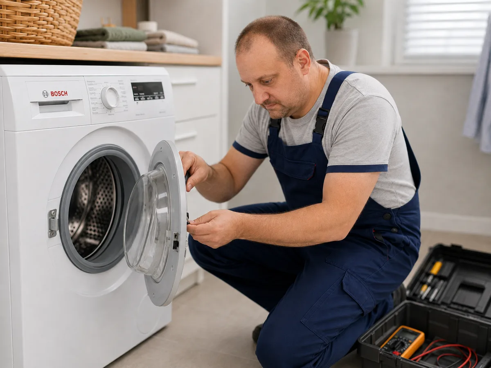
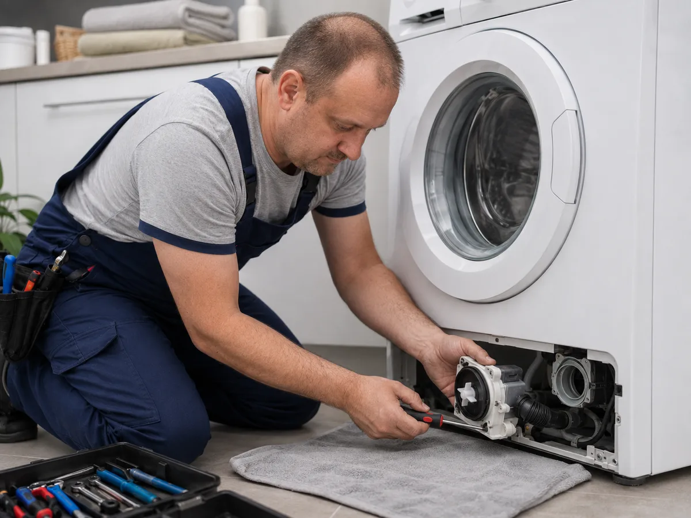
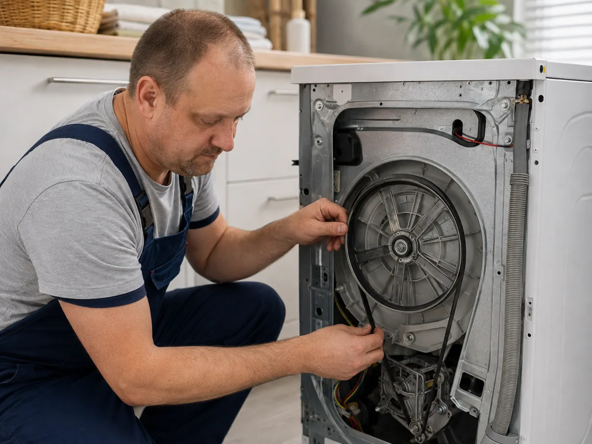
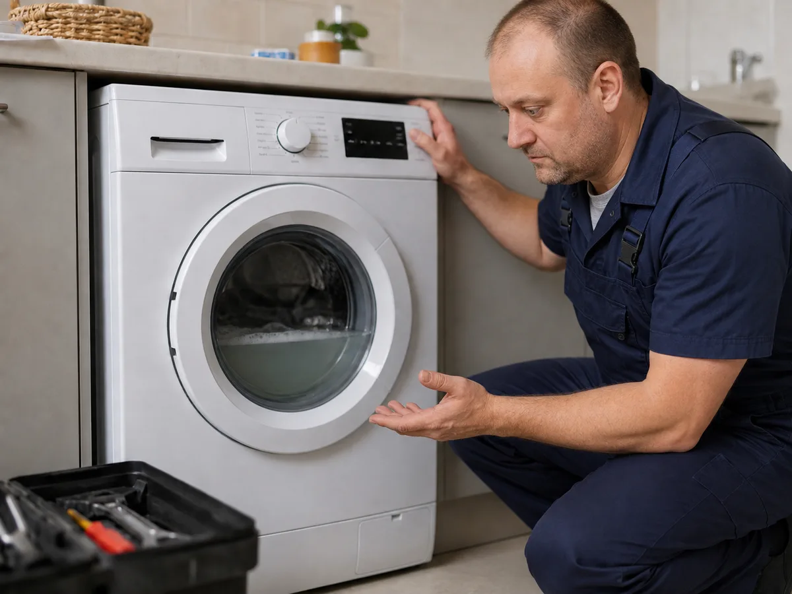

Ремонт пральних машин Samsung у Харкові
Майстер з ремонту пральних машин Samsung приїде додому, проведе діагностику та погодить ціну. Ремонтуємо злив, нагрів, віджим, люк, двигун і модуль керування.
- ✓ Ремонт вдома
- ✓ Діагностика несправності
- ✓ Узгодження ціни до ремонту
- ✓ Виїзд по Харкову та області

Заявка на ремонт
Залиште телефон — майстер уточнить модель, симптоми поломки та район Харкова та області або область.
Часті несправності

Помилка 5E / SE
Часто пов’язана зі зливом води, фільтром, насосом або засміченням.
Помилка 4E
Проблема з набором води, заливним клапаном, тиском або шлангом.
Помилка UE
Дисбаланс, перевантаження, амортизатори або проблеми з віджимом.

Не гріє воду
Перевірка ТЕНа, датчика температури та плати керування.

Не відкривається люк
Заміна замка люка, ручки, петлі або УБЛ.
Не крутить барабан
Перевірка ременя, двигуна, щіток та електроніки керування.
Популярні ціни
Заміна насоса
1500 грн
Заміна ТЕНа
1400–1900 грн
Заміна УБЛ
1700 грн
Ремонт модуля
ціна договірна
Часті питання
Чи можна виконати ремонт вдома?
Так, більшість робіт виконується вдома без вивезення пральної машини в майстерню.
Скільки коштує ремонт?
Ціна залежить від несправності. Наприклад, заміна насоса — 1500 грн, заміна ТЕНа — 1400–1900 грн, заміна УБЛ — 1700 грн.
Що робити, якщо машина не зливає воду?
Не запускайте машинку багато разів поспіль. Залиште заявку, майстер перевірить фільтр, насос, шланг і систему зливу.